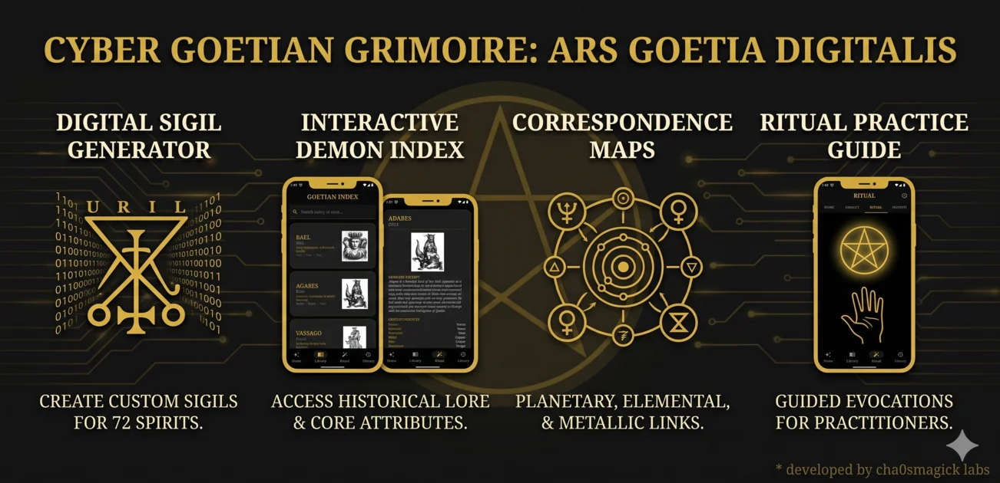

Goetic Magic for Beginners: The Complete Guide to the 72 Spirits of Solomon
Goetic magic is one of the most misunderstood and powerful branches of Western ceremonial occultism. To the uninitiated, it conjures images of pentagrams, incense, and summoning demons. To the practitioner, it is a structured, precise, and deeply transformative system of spiritual work rooted in the Lemegeton, also known as the Lesser Key of Solomon.
In this comprehensive guide, you will learn what Goetic magic actually is, how the 72 spirits are organized, how to create and charge sigils, the protocols for safe invocation, and how modern digital tools are making this ancient practice more accessible than ever.
What Is Goetic Magic?
Goetic magic (from the Greek goeteia, meaning "sorcery") refers to the branch of Solomonic magic that deals with the evocation of 72 specific spirits. These spirits, traditionally bound by King Solomon into a bronze vessel, are described in the Ars Goetia, the first section of the Lemegeton (circa 17th century).
Each spirit has a distinct rank, appearance, planetary correspondence, and area of influence. Some teach arts and sciences, others reveal hidden treasures, and still others provide love or protection. Contrary to popular belief, Goetic spirits are not inherently "evil" — they are forces of nature that respond to authority, respect, and structured ritual.
The 72 Spirits: Hierarchy and Structure
The 72 spirits are organized into a complex hierarchy:
- Kings (4): Bael, Purson, Asmoday, and Vine — rule over vast territories and are invoked with the highest authority
- Princes (8): Vassago, Sitri, Ipos, Gaap, Stolas, Orobas, Seere, and Dantalion — powerful spirits with broad domains
- Dukes (16): Include Agares, Valefor, Barbatos, Gusion, and others — govern specific regions and respond to complex invocations
- Marquises (12): Like Sabnock, Orias, Andras, and Phenex — known for their educational and transformative powers
- Counts/Presidents (32): The remaining spirits, each with specialized knowledge and functions
Each spirit has a unique seal (sigil) that acts as a focal point for evocation. These seals are geometrically precise and must be rendered accurately for the invocation to be effective.
Essential Tools for Goetic Practice
The Sigil
Every Goetic spirit has a unique sigil derived from its Hebrew name and planetary square. The sigil serves as the spirit's "phone number" — a precise symbolic address that the magician uses to establish contact. Traditional practice requires the sigil to be drawn on parchment or engraved on metal, but digital sigils generated with cryptographic precision are equally valid for evocation work.
The Circle and Triangle
The magic circle is the magician's protected space. The triangle of manifestation (or "triangle of art") is where the spirit is constrained to appear. Both must be drawn with precision following the instructions in the Ars Goetia. Modern practitioners often create permanent circles using floor decals or digital projections.
Planetary Hours and Correspondences
Each spirit is associated with a specific planet and planetary hour. Invoking during the correct hour amplifies the connection. Mercury hour is excellent for communication spirits, Mars hour for protective or confrontational work, and Venus hour for love-related invocations.
How to Perform a Goetic Invocation: Step by Step
- Preparation (1-3 days before): Study the spirit's profile, rank, and correspondences. Fast lightly, avoid intoxicants, and set your intention clearly.
- Create the sigil: Draw or generate the spirit's seal. If using a digital tool, ensure the sigil is mathematically precise and printed or displayed on a dedicated surface.
- Cast the circle: Use a ritual knife (athame), wand, or finger to trace the circle. Visualize it as a barrier of blue-white light.
- Invoke the spirit: Recite the appropriate invocation from the Ars Goetia. Speak with authority and focus. Visualize the sigil glowing.
- State your request: Be specific, respectful, and concise. Avoid ambiguous language. State what you want, why you want it, and when you want it by.
- License to depart: Thank the spirit and formally dismiss it. Never leave a circle without proper license. Close the circle in reverse order.
- Record the experience: Log the date, time, planetary hour, method used, and any sensations, visions, or results in your grimoire.
Safety Protocols for Goetic Work
Goetic magic is powerful and should be approached with respect and discipline. Follow these safety rules:
- Never skip the licensing ritual. Always formally dismiss the spirit before closing your circle. Failure to do so can result in lingering influences.
- Protect your identity. Use a magical name (motto) during invocations. Your legal name gives the spirit a direct link to you.
- Keep a grimoire. Document every invocation, including failures. Patterns in your practice will emerge over time.
- Ground after each session. Eat a meal, take a walk, or engage in a mundane activity to return fully to normal consciousness.
- Start with lower-ranking spirits. Presidents and Counts are more accessible to beginners than Kings and Princes.
Common Beginner Mistakes
- Using incorrect seals: Even a minor geometric error can render a sigil ineffective. Always verify against multiple authoritative sources.
- Inconsistent practice: Goetic magic requires discipline. Sporadic invocations produce sporadic results.
- Fear-based approach: Approaching spirits with fear invites negative outcomes. Respect, not fear, is the correct attitude.
- Skipping correspondences: Planetary hours, elemental associations, and lunar phases all affect the quality of invocation.
Digital Tools for the Modern Goetic Practitioner
Technology has transformed occult practice. A well-designed digital grimoire app can replace a shelf of books and hours of manual sigil drafting. The best digital tools for Goetic work include:
- Digital sigil generators that render mathematically precise seals from canonical sources
- Complete spirit databases with rankings, planetary hours, psalm verses, and correspondences
- Built-in invocation guides with step-by-step ritual frameworks
- Offline access for ritual work in remote locations without internet
Master the 72 Spirits with Arcana Goetia
Our premium app gives you the complete Lemegeton in your pocket. Generate precise sigils, explore the full spirit hierarchy, and access guided invocation frameworks — all offline, with no ads or tracking.
Get Arcana Goetia — $3.99100% offline • No ads • No tracking • One-time payment
Integrating Goetic Work with Chaos Magick
Chaos magicians often adopt Goetic spirits as servitors or egregores, stripping away the ceremonial framework and focusing on the sigil-intention-result loop. This approach can be highly effective, but it requires a solid understanding of the spirit's nature. A Goetic spirit is not a blank servitor — it has history, personality, and will. Treating it with respect yields better results than attempting to command it through pure will alone.
Many advanced practitioners use a hybrid approach: the structure of Solomonic evocation combined with the flexibility of chaos magick belief-shifting. The sigil is fired using gnosis techniques, but the spirit's historical correspondences are respected as part of the magical contract.
Recommended Reading and Resources
- The Lesser Key of Solomon (transl. S.L. MacGregor Mathers & Aleister Crowley)
- The Goetia: The Lesser Key of Solomon the King (transl. Crowley, ed. Hymenaeus Beta)
- Demonolatry Goetia by S. Connolly (for a demonolater perspective)
- Liber Null & Psychonaut by Peter J. Carroll (for chaos magick integration)
- Digital Sigil Magic Guide — our guide to combining sigils with technology
Final Thoughts
Goetic magic is not a quick path to power. It is a discipline that rewards patience, precision, and respect. The 72 spirits have been evoked for centuries, and they are not going anywhere. Whether you approach them through traditional Solomonic ritual or through the lens of modern chaos magick, the key is consistent practice and accurate technique.
Start small. Master one spirit. Keep records. And never forget: the power is not in the sigil or the incantation — it is in your focused will.